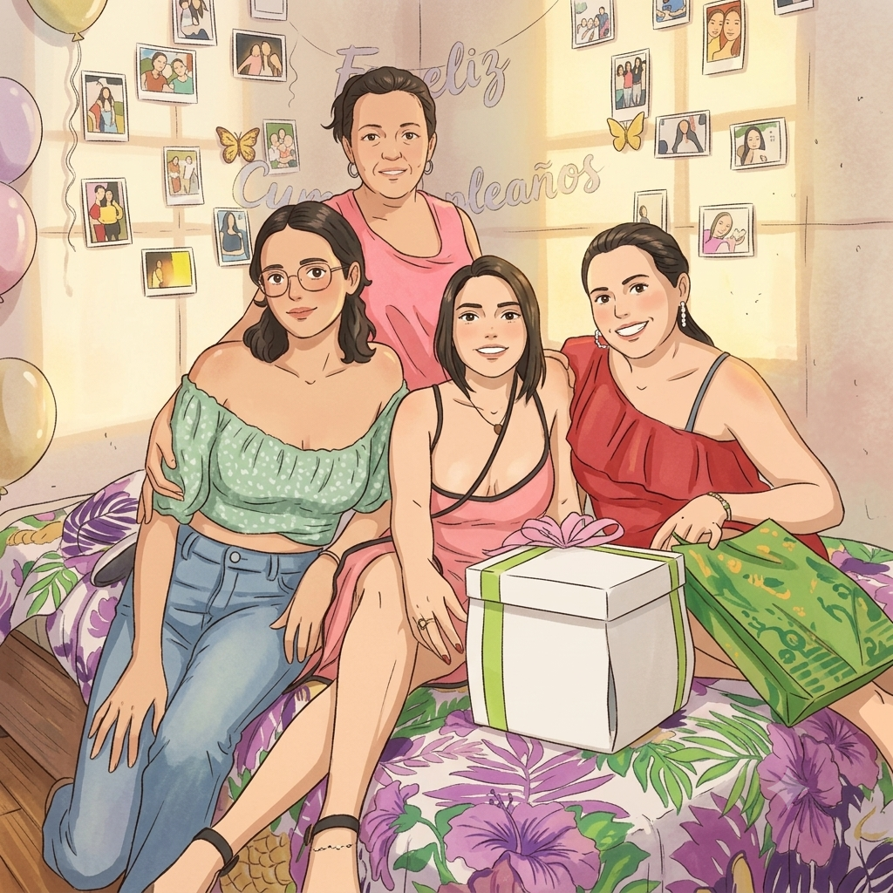
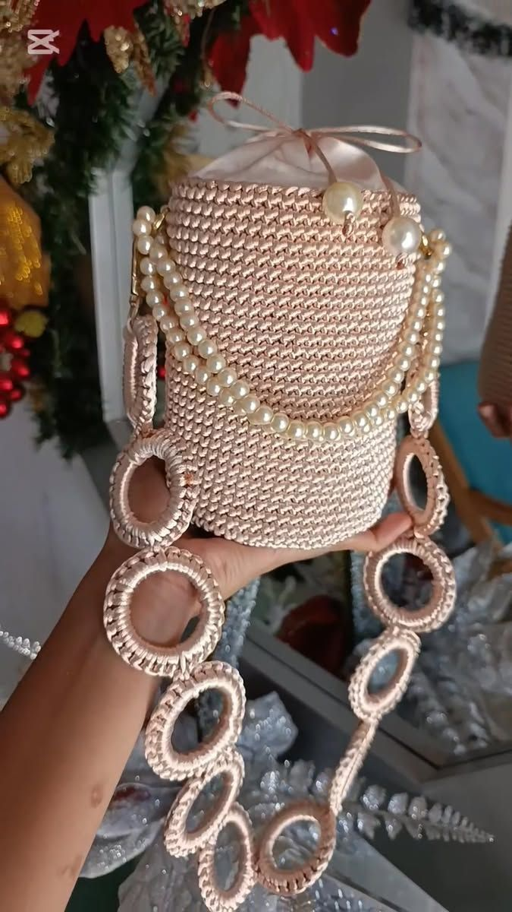
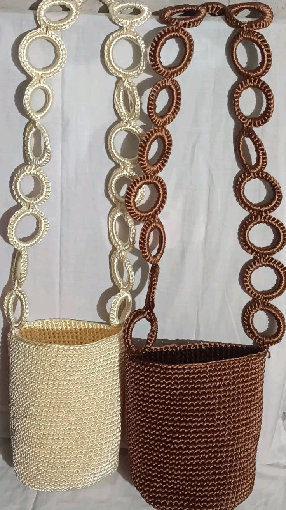
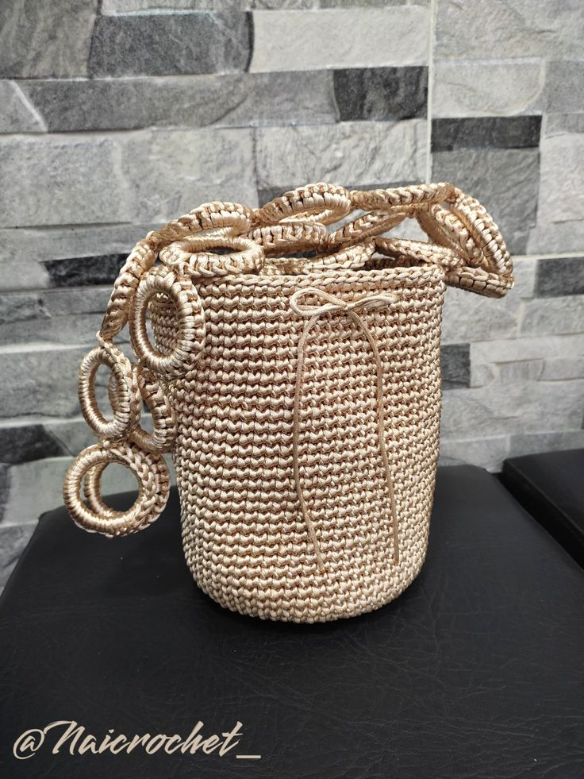
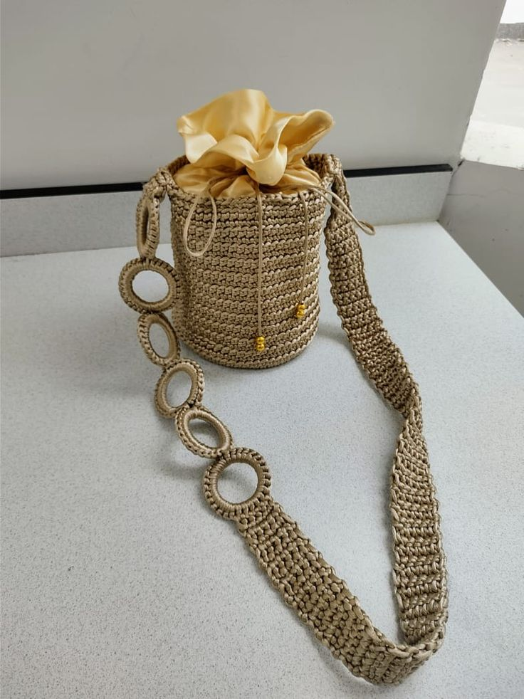

Llaveros
Accesorios pequeños en hilo natural, perfectos para acompañar tus llaves o bolsos.
 Airis
Airis
Mochilas y artesanías tejidas a mano, hilo por hilo, por una abuela y su nieta. Piezas únicas, hechas para durar y para acompañar.

Airis nace en casa, entre agujas, carretes de hilo y tardes de tejido compartidas entre una abuela y su nieta. Lo que empezó como una tradición familiar hoy se convierte en mochilas y piezas artesanales para quienes valoran lo hecho a mano.
Cada mochila lleva horas de trabajo detallado: nudo por nudo, sin prisa, cuidando el acabado y la caída del hilo. No hay dos piezas exactamente iguales.
"Tejemos con las manos lo que queremos que dure en el tiempo."
Un vistazo al proceso y a las piezas terminadas — el detalle de cada nudo, cada color, cada acabado.

fotos/mochila-champagne-1.jpg
fotos/detalle-asa-aritos.jpg
fotos/mochila-marron-1.jpg
fotos/proceso-tejido-1.jpg fotos/mochila-cordon-seda-1.jpg
fotos/mochila-cordon-seda-1.jpg
 fotos/artesania-1.jpg
fotos/artesania-1.jpg
 fotos/lifestyle-1.jpg
fotos/lifestyle-1.jpg
Diseños tipo balde con asa tejida en cadena de aritos, cierre de cordón y detalles en tonos champagne, dorado y beige.
Hilo sedoso en tono champagne, cierre con cordón satinado y asa de aritos tejidos.
Consultar precioTejido en hilo dorado con bolsa interior en satín y cordón de cierre a juego.
Consultar precioTejido compacto en hilo cola de ratón, disponible en tonos crudo y marrón.
Consultar precioAdemás de las mochilas, hacemos piezas artesanales por encargo: llaveros, monederos, individuales y detalles decorativos en el mismo hilo y paleta de la colección.
Accesorios pequeños en hilo natural, perfectos para acompañar tus llaves o bolsos.

Pequeños monederos tejidos con la misma paleta y textura suave de la colección.

Tapetes individuales a medida para la mesa, con detalles elegantes y resistencias artesanales.

Piezas decorativas en la misma gama de colores para complementar cualquier espacio.
Cuéntanos qué mochila o pieza te gustó por WhatsApp.
Te confirmamos color, tiempo de entrega y forma de envío.
Tejemos y enviamos tu mochila o artesanía, lista para usar.
Escríbenos para conocer disponibilidad, colores y tiempos de entrega.
Escribir por WhatsApp